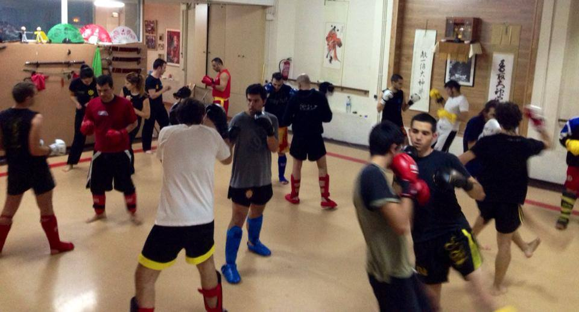
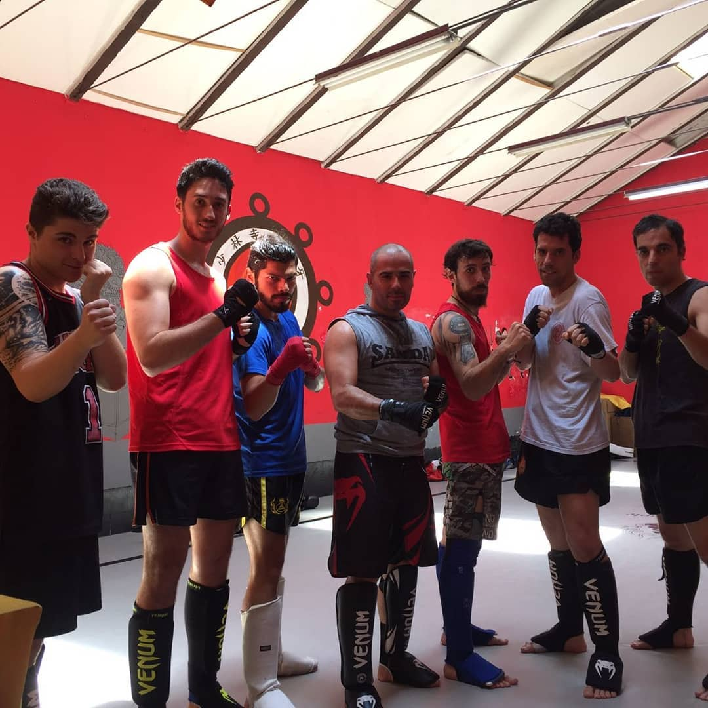
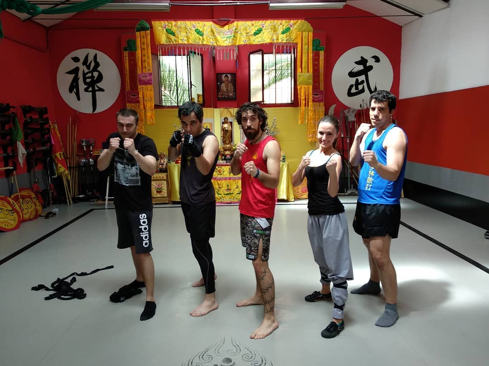
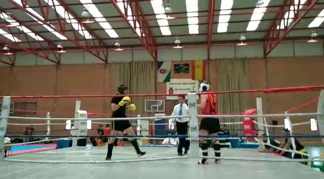
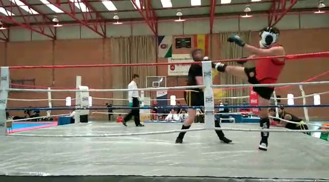
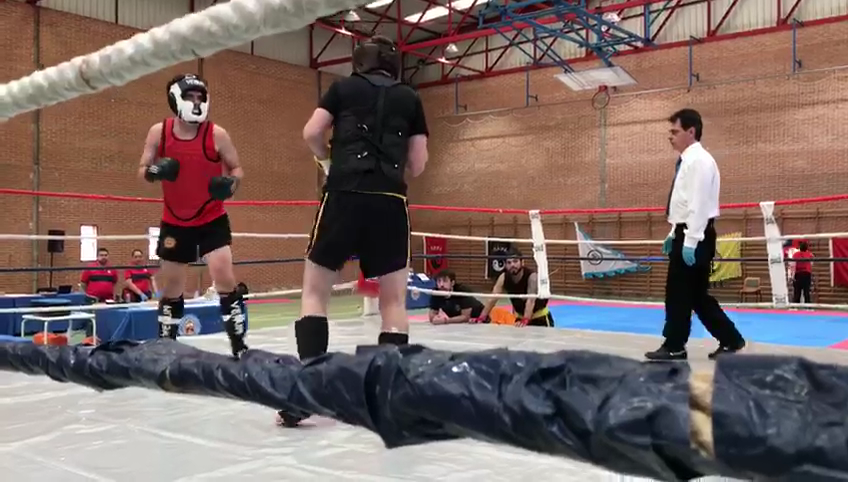

Shaolin Sanda
Desde pequeño fui un apasionado de las artes marciales asiáticas. Bruce Lee, Van Damme, las películas de Hong Kong… esa imagen del combatiente disciplinado y técnico siempre me fascinó. Cuando llegó la oportunidad de practicarlo de verdad, no dudé.
¿Qué es Sanda?
El Sanda (también conocido como Sanshou, 散打) es el componente de combate libre del Kung Fu chino y la modalidad de combate del Wushu moderno. Combina golpes de puño, patadas, derribos y proyecciones, y se practica con protecciones sobre un ring elevado llamado lei tai (擂台). A diferencia del boxeo o el kickboxing, el objetivo no es solo golpear: derribar al rival o sacarlo del lei tai también puntúa.
El primer templo: Shaolin Temple Spain en la calle Aguilenas
Mi entrada en el Sanda fue gracias a mi primo, que me propuso apuntarnos juntos con un bono de Groupon. La escuela era el Shaolin Temple Spain, con sede entonces en la calle Aguilenas de Madrid. Así que allí fuimos.

La clase me enganchó desde el primer día. El ambiente era serio pero cercano, y la mezcla de técnica y contacto real era exactamente lo que buscaba. Mi primo acabó mudándose a Motril tiempo después, pero yo seguí.
El templo de la calle Geranios
Con el tiempo, el Shaolin Temple Spain cambió de sede a un nuevo local un par de calles más abajo, en la calle Geranios. El nuevo espacio era más amplio y tenía otro ambiente: paredes rojas, los kanji de 禅 (zen) y 武 (wu/marcial) en las paredes, y un altar budista presidiendo el fondo de la sala. Más templo, más auténtico.


Bajo la enseñanza del Sifu Carlos fui desarrollando el juego técnico a lo largo de casi una década: el trabajo de piernas, las combinaciones de puños y patadas, las proyecciones, la guardia. Pero siempre me quedaba una espinita: quería competir de verdad, subirme a un ring. Desde pequeño lo había querido hacer.
El Campeonato de España de Wushu en San Martín de Valdeiglesias
En 2018 llegó la oportunidad. El Campeonato de España de Wushu se celebraba en San Martín de Valdeiglesias y me apunté en la categoría de Sanda por debajo de 80 kg. Me preparé durante seis meses en exclusiva para ello: sin otra actividad, centrado solo en puesta a punto física y técnica para el combate.

En primera ronda me tocó contra la escuela de Madrid Daoiz y Velarde. La escuela más potente del campeonato era gallega — varios de sus integrantes ganaron sus categorías y clasificaron para el Campeonato de Europa del año siguiente, celebrado en Rusia.


Lo que me enseñó subirse al lei tai
La experiencia fue exactamente lo que quería vivir desde pequeño, y no me arrepiento en absoluto de haberla buscado. Pero fue también una lección de humildad muy concreta.
Me había preparado bien físicamente. Seis meses de trabajo específico se notaban. El problema es que en este tipo de eventos la experiencia de competición lo es todo, y eso no se adquiere en el gimnasio. Saber relajar el cuerpo en los ataques y en las defensas — no tensarse, no gastar energía de más en cada intercambio — es una habilidad que solo da el tiempo compitiendo. Sin ella, el gasto físico se dispara.
El resultado fue que a los 45 segundos del primer round ya no podía más. Un combate de Sanda son tres rounds de tres minutos. La diferencia entre aguantarlos y no aguantarlos no es solo la condición física: es saber administrar el esfuerzo, y eso es pura experiencia acumulada.
Me gustó mucho haberlo hecho. Era algo que quería desde niño, lo preparé en serio, y me subí al ring. El resto es parte del aprendizaje.
Lo que me enseñó el Sanda a lo largo de los años
- Disciplina: Entrenamientos regulares y exigentes durante una década
- Respeto: Hacia los maestros, compañeros y oponentes
- Control: Físico y mental en situaciones de presión
- Perseverancia: Superación constante de límites personales
- Humildad: La experiencia no se compra ni se entrena — se acumula
La combinación de fútbol y Sanda durante tantos años me ha dado una base sólida de condición física, disciplina mental y espíritu competitivo que aplico en todos los aspectos de mi vida.